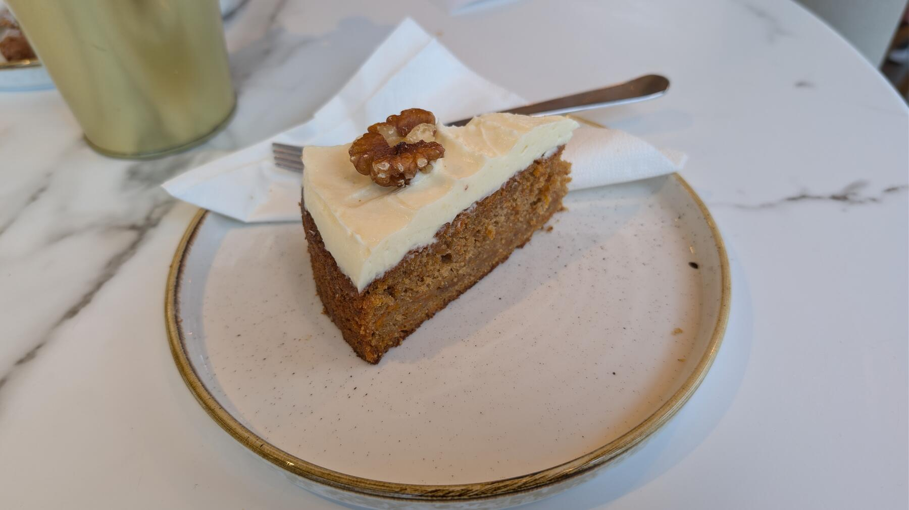

Zurück zur Übersicht
Karottenkuchen
Saftiger Kuchen aus Möhren und Mandeln mit Zimt, rundherum mit Frischkäse-Frosting bestrichen. Eine Portion entspricht einem Stück.
- Zeit
- 1 Std. 15 Min.
- Schwierigkeit
- mittel
- Kategorie
- Süßgebäck
- Ernährung
- vegetarisch
Zutaten
Portionen
Für den Teig
- 375 gMöhren, fertig gerieben
- 250 gMehl
- 2 TLBackpulver
- 250 gZucker
- 1 TLZimtpulver
- 250 mlNeutrales Öl
- 4Eier
- 200 gGemahlene Mandeln
- Fett für die Form
Für das Frosting
- 300 gFrischkäse
- 100 gPuderzucker
- 1 PackungVanillezucker
- Etwas Zitronensaft
Zubereitung
- Eier, Zucker, Öl und Zimt mit dem Mixer verrühren. Möhren und Mandeln dazugeben. Mehl und Backpulver mischen und ebenfalls unterrühren.
- Den Teig in eine gefettete 26er-Springform füllen und im heißen Ofen bei 180 °C Ober-/Unterhitze 40–50 Minuten backen. Mit einer Stäbchenprobe prüfen, jeder Ofen ist etwas anders.
- Für das Frosting Frischkäse und Zitronensaft mit dem Mixer auf niedriger Stufe glatt rühren und Puderzucker und Vanillezucker einrieseln lassen.
- Den Kuchen abkühlen lassen und das Frosting mit einer Streichpalette rundherum auftragen.